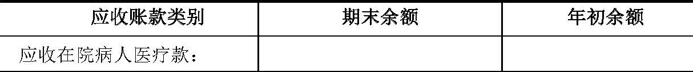
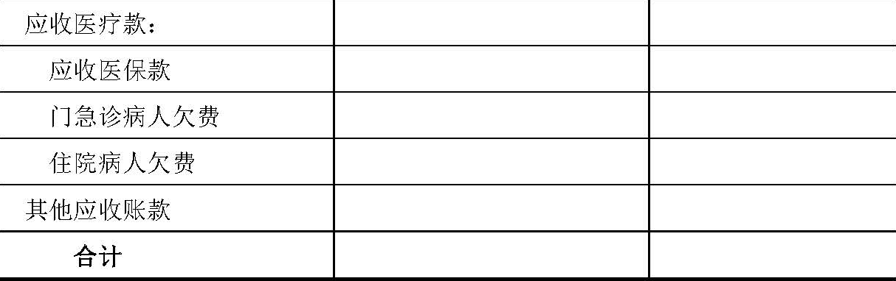
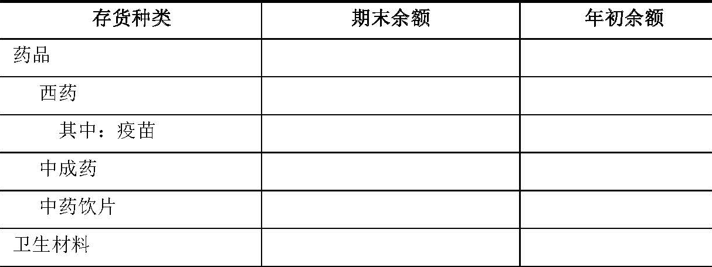
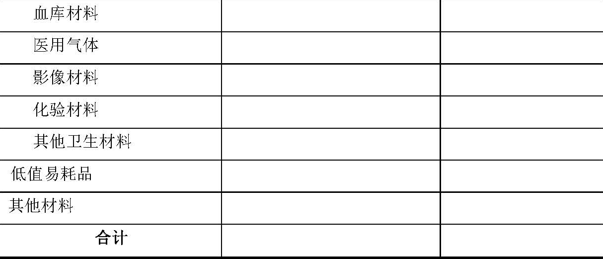

关于基层医疗卫生机构执行《政府会计制度——行政事业单位会计科目和报表》的补充规定
根据《政府会计准则——基本准则》，结合行业实际情况，现就基层医疗卫生机构注1执行《政府会计制度——行政事业单位会计科目和报表》（以下简称新制度）做出如下补充规定：
一、关于新增一级科目及其使用说明
（一）基层医疗卫生机构应当增设“2308 待结算医疗款”一级科目。
（二）关于增设科目的使用说明
2308 待结算医疗款
一、本科目核算按“收支两条线”管理的基层医疗卫生机构的待结算医疗收费。
按“收支两条线”管理的基层医疗卫生机构应当在为病人提供医疗服务（包括发出药品，下同）并收讫价款或取得收款权利时，按照规定的医疗服务项目收费标准计算确定收费金额并确认待结算医疗款。给予病人或其他付费方的折扣金额不计入待结算医疗款。
基层医疗卫生机构同医疗保险机构等结算时，因基层医疗卫生机构按照医疗服务项目收费标准计算确定的应收医疗款金额与医疗保险机构等实际支付金额之间的差额应当调整待结算医疗款。
二、基层医疗卫生机构应当在本科目下设置如下明细科目，并按照医疗服务类型进行明细核算。
1.“230801 门急诊收费”科目，核算基层医疗卫生机构为门急诊病人提供医疗服务所确认的待结算医疗收费。
基层医疗卫生机构应当在“230801 门急诊收费”科目下设置“23080101 挂号收费”、“23080102 诊察收费”、“23080103 检查收费”、“23080104 化验收费”、“23080105 治疗收费”、“23080106 手术收费”、“23080107 卫生材料收费”、“23080108 药品收费”、“23080109 一般诊疗费收费”、 “23080110 其他门急诊收费”和“23080111 门急诊结算差额”明细科目。
基层医疗卫生机构应当在“23080108 药品收费”科目下设置“2308010801 西药收费”、“2308010802 中成药收费”和“2308010803 中药饮片收费”明细科目；在“2308010801 西药收费”科目下设置“230801080101 西药”、“230801080102 疫苗”明细科目。
2.“230802 住院收费”科目，核算基层医疗卫生机构为住院病人提供医疗服务所确认的待结算医疗收费。
基层医疗卫生机构应当在“230802 住院收费”科目下设置“23080201 床位收费”、“23080202 诊察收费”、“23080203 检查收费”、“23080204 化验收费”、“23080205 治疗收费”、“23080206 手术收费”、“23080207 护理收费”、“23080208 卫生材料收费”、“23080209药品收费”、“23080210 一般诊疗费收费”、“23080211 其他住院收费”和“23080212 住院结算差额”明细科目。
基层医疗卫生机构应当在“23080209 药品收费”科目下设置“2308020901 西药收费”、“2308020902 中成药收费”和“2308020903 中药饮片收费”明细科目；在“2308020901 西药收费”科目下应当设置“230802090101 西药”、“230802090102 疫苗”明细科目。
执行医事服务费的基层医疗卫生机构应当分别在“待结算医疗款——门急诊收费——诊察收费”和“待结算医疗款——住院收费——诊察收费”科目中核算医事服务费。执行药事服务费的基层医疗卫生机构应当分别在“待结算医疗款——门急诊收费——其他门急诊收费”和“待结算医疗款——住院收费——其他住院收费”科目中核算药事服务费。
基层医疗卫生机构有打包性质收费的，应当按照医疗服务项目类别对收费进行拆分，分别计入本科目的相应明细科目。
三、待结算医疗款的主要账务处理如下：
（一）基层医疗卫生机构与门急诊病人结算医疗款时，对于应向门急诊病人收取的部分，按照门急诊病人实际支付或应付未付的医疗款金额，借记“库存现金”、“银行存款”、“应收账款——应收医疗款——门急诊病人欠费”等科目，对于应由医疗保险机构等负担的部分，按照依有关规定计算确定的应收医保款金额，借记“应收账款——应收医疗款——应收医保款”科目，按照依有关规定计算确定的门急诊病人医疗款金额，贷记本科目（门急诊收费）。
（二）病人住院期间，基层医疗卫生机构因提供医疗服务确认待结算医疗款时，按照依有关规定计算确定的住院病人医疗款金额，借记“应收账款——应收在院病人医疗款”科目，贷记本科目（住院收费）。
（三）基层医疗卫生机构与住院病人结算医疗款时，住院病人应付医疗款金额大于其预交金额的，按照预收住院病人医疗款金额，借记“预收账款——预收医疗款——住院预收款”科目，按照病人实际补付或应付未付金额，借记“库存现金”、“银行存款”、“应收账款——应收医疗款——出院病人欠费”等科目，按照依有关规定计算的应由医疗保险机构等负担的医疗保险金额，借记“应收账款——应收医疗款——应收医保款”科目，按照已经确认的应收在院病人医疗款金额，贷记“应收账款——应收在院病人医疗款”科目。
住院病人应付医疗款金额小于其预交金额的，按照预收住院病人医疗款金额，借记“预收账款——预收医疗款——住院预收款”科目，按照依有关规定计算的应由医疗保险机构等负担的医疗保险金额，借记“应收账款——应收医疗款——应收医保款”科目，按照退还给住院病人的金额，贷记“库存现金”、“银行存款”等科目，按照已经确认的应收在院病人医疗款金额，贷记“应收账款——应收在院病人医疗款”科目。
（四）基层医疗卫生机构与医疗保险机构等结算时，按照实际收到的金额，借记“银行存款”科目，按照应收医保款的金额，贷记“应收账款——应收医疗款——应收医保款”科目，按照借贷方之间的差额，借记或贷记本科目（门急诊收费——门急诊结算差额）或本科目（住院收费——住院结算差额）。
（五）在期末或规定的上缴时间，基层医疗卫生机构按照依有关规定确定的金额，借记本科目，按照依有关规定确定的上缴同级财政部门的金额，贷记“银行存款”等科目，按照依有关规定确定留用的金额，贷记“事业收入——医疗收入”科目。
四、本科目期末贷方余额，反映基层医疗卫生机构期末待结算医疗款。
二、关于在新制度相关一级科目下设置明细科目
（一）基层医疗卫生机构应当在新制度规定的“1212 应收账款”科目下设置如下明细科目：
1.“121201 应收在院病人医疗款”科目，核算基层医疗卫生机构因提供医疗服务应向在院病人收取的医疗款，应当按照在院病人进行明细核算。
2.“121202 应收医疗款”科目，核算基层医疗卫生机构因提供医疗服务应向医疗保险机构、门急诊病人、出院病人等收取的医疗款，应当按照医疗保险机构、门急诊病人、出院病人等进行明细核算。基层医疗卫生机构应当在本科目下设置如下明细科目：
（1）“12120201 应收医保款”科目，核算基层医疗卫生机构因提供医疗服务而应向医疗保险机构等收取的医疗款。
（2）“12120202 门急诊病人欠费”科目，核算门急诊病人应付未付医疗款。
（3）“12120203 出院病人欠费”科目，核算出院病人应付未付医疗款。
3.“121203 其他应收账款”科目，核算基层医疗卫生机构除应收在院病人医疗款、应收医疗款以外的其他应收账款，如基层医疗卫生机构因提供科研教学等服务、按合同或协议约定应向接受服务单位收取的款项。
（二）基层医疗卫生机构应当在新制度规定的“1219 坏账准备”科目下设置如下明细科目：
1.“121901 应收账款坏账准备”科目，核算未按“收支两条线”管理的基层医疗卫生机构按规定对除应收在院病人医疗款以外的应收账款和其他应收款提取的坏账准备，以及按“收支两条线”管理的基层医疗卫生机构按规定对除应收在院病人医疗款、应收医疗款外的应收账款和其他应收款提取的坏账准备。
2.“121902 其他应收款坏账准备”科目，核算基层医疗卫生机构按规定对其他应收款提取的坏账准备。
（三）基层医疗卫生机构应当在新制度规定的“1302 库存物品”科目下设置“130201 药品”、“130202 卫生材料”、“130203 低值易耗品”和“130204 其他材料”明细科目。
基层医疗卫生机构应当在“130201 药品”科目下设置“13020101 西药”、“13020102 中成药”和“13020103 中药饮片”明细科目；在“13020101 西药”科目下设置“1302010101 西药”和“1302010102 疫苗”明细科目。
基层医疗卫生机构应当在“130202 卫生材料”科目下设置“13020201 血库材料”、“13020202医用气体”、“13020203 影像材料”、“13020204 化验材料”和“13020205 其他卫生材料”明细科目。
（四）基层医疗卫生机构应当在新制度规定的“2305 预收账款”科目下设置如下明细科目：
1.“230501 预收医疗款”科目，核算基层医疗卫生机构预收医疗保险机构等预拨的医疗保险金和预收病人的预交金。基层医疗卫生机构应当在本科目下设置如下明细科目：
（1）“23050101 预收医保款”科目，核算基层医疗卫生机构预收医疗保险机构等预拨的医疗保险金。
（2）“23050102 门急诊预收款”科目，核算基层医疗卫生机构预收门急诊病人的预交金。
（3）“23050103 住院预收款”科目，核算基层医疗卫生机构预收住院病人的预交金。
2.“230502 其他预收账款”科目，核算基层医疗卫生机构除预收医疗款以外的其他预收账款，如基层医疗卫生机构因提供科研教学等服务、按合同或协议约定预收接受服务单位的款项。
（五）基层医疗卫生机构应当在新制度规定的“3001 累计盈余”科目下设置如下明细科目：
1.“300101 医疗盈余”科目，核算基层医疗卫生机构开展医疗活动产生的累计盈余。
2.“300102 公共卫生盈余”科目，核算基层医疗卫生机构开展公共卫生活动产生的累计盈余。
3.“300103 科教盈余”科目，核算基层医疗卫生机构开展科研教学活动产生的累计盈余。
4.“300104 新旧转换盈余”科目，核算基层医疗卫生机构执行新制度前形成的、除新旧转换时转入医疗盈余、公共卫生盈余和科教盈余外的累计盈余。
（六）基层医疗卫生机构应当在新制度规定的“3101 专用基金”科目下设置如下明细科目：
1.“310101 职工福利基金”科目，核算基层医疗卫生机构根据有关规定、按照财务会计下相关数据计算提取的职工福利基金。
2.“310102 医疗风险基金”科目，核算基层医疗卫生机构根据相关规定、按照财务会计下相关数据计算提取并列入费用的医疗风险基金。
3.“310103 奖励基金”科目，核算基层医疗卫生机构根据相关规定、按照财务会计下相关数据计算提取的奖励基金。
（七）基层医疗卫生机构应当在新制度规定的“3301 本期盈余”科目下设置如下明细科目：
1.“330101 医疗盈余”科目，核算基层医疗卫生机构本期医疗活动产生的各项收入、费用相抵后的余额。
2.“330102 公共卫生盈余”科目，核算基层医疗卫生机构本期公共卫生活动产生的各项收入、费用相抵后的余额。
3.“330103 科教盈余”科目，核算基层医疗卫生机构本期科研教学活动产生的各项收入、费用相抵后的余额。
（八）基层医疗卫生机构应当在新制度规定的“3302 本年盈余分配”科目下设置“330201 提取职工福利基金”、“330202 提取奖励基金”、“330203 转入累计盈余”明细科目。
年末，基层医疗卫生机构在按照规定提取专用基金后，应当将“本年盈余分配”科目余额转入累计盈余，借记“本年盈余分配——转入累计盈余”科目，贷记“累计盈余——医疗盈余”科目。
（九）基层医疗卫生机构应当在新制度规定的“4001 财政拨款收入”科目下设置如下明细科目：
1.“400101 财政基本拨款收入”科目，核算基层医疗卫生机构取得的用于基本支出的财政拨款收入。基层医疗卫生机构应当在本科目下设置如下明细科目：
（1）“40010101 医疗收入”科目，核算基层医疗卫生机构取得的与医疗活动相关的财政基本拨款收入。
（2）“40010102 公共卫生收入”科目，核算基层医疗卫生机构取得的与公共卫生活动相关的财政基本拨款收入。
2.“400102 财政项目拨款收入”科目，核算基层医疗卫生机构取得的用于项目支出的财政拨款收入。基层医疗卫生机构应当在本科目下设置如下明细科目：
（1）“40010201 医疗收入”科目，核算基层医疗卫生机构取得的与医疗活动相关的财政项目拨款收入。
（2）“40010202 公共卫生收入”科目，核算基层医疗卫生机构取得的与公共卫生活动相关的财政项目拨款收入。
（3）“40010203 科教收入”科目，核算基层医疗卫生机构取得的与科研教学活动相关的财政项目拨款收入。
（十）基层医疗卫生机构应当在新制度规定的“4101 事业收入”科目下设置如下明细科目：
1.“410101 医疗收入”科目，核算基层医疗卫生机构开展医疗服务活动实现的收入。基层医疗卫生机构应当在本科目下设置如下明细科目：
（1）“41010101 门急诊收入”科目，核算基层医疗卫生机构为门急诊病人提供医疗服务所实现的收入，包括按“收支两条线”管理的基层医疗卫生机构按规定留用的待结算医疗款，以及收到的同级财政部门返还的上缴门急诊收费。
基层医疗卫生机构应当在“41010101 门急诊收入”科目下设置“4101010101 挂号收入”、“4101010102 诊察收入”、“4101010103 检查收入”、“4101010104 化验收入”、“4101010105 治疗收入”、“4101010106 手术收入”、“4101010107 卫生材料收入”、“4101010108药品收入”、“4101010109 一般诊疗费收入”和“4101010110 其他门急诊收入”明细科目（未按“收支两条线”管理的基层医疗卫生机构还应当设置“4101010111 门急诊结算差额”明细科目）。
基层医疗卫生机构应当在“4101010108 药品收入”科目下设置“410101010801 西药”、“410101010802 中成药”和“410101010803 中药饮片”明细科目；在“410101010801 西药”科目下设置 “41010101080101 西药”、“41010101080102 疫苗”明细科目。
“4101010111 门急诊结算差额”科目，核算未按“收支两条线”管理的基层医疗卫生机构同医疗保险机构等结算时，因基层医疗卫生机构按照医疗服务项目收费标准计算确定的应收医疗款金额与医疗保险机构等实际支付金额之间的差异而产生的需要调整基层医疗卫生机构医疗收入的差额，但不包括基层医疗卫生机构因违规治疗等管理不善原因被医疗保险机构等拒付的金额。
（2）“41010102 住院收入”科目，核算基层医疗卫生机构为住院病人提供医疗服务所实现的收入，包括按“收支两条线”管理的基层医疗卫生机构按规定留用的待结算医疗款，以及收到的同级财政部门返还的上缴住院收费。
基层医疗卫生机构应当在“41010102 住院收入”科目下设置“4101010201 床位收入”、“4101010202 诊察收入”、“4101010203 检查收入”、“4101010204 化验收入”、“4101010205 治疗收入”、“4101010206 手术收入”、 “4101010207 护理收入”、“4101010208 卫生材料收入”、“4101010209 药品收入”、“4101010210 一般诊疗费收入”和“4101010211 其他住院收入”明细科目（未按“收支两条线”管理的基层医疗卫生机构还应当设置“4101010212 住院结算差额”明细科目）。
基层医疗卫生机构应当在“4101010209 药品收入”科目下设置“410101020901 西药”、“410101020902 中成药”和“410101020903 中药饮片”明细科目；在“410101020901 西药”科目下设置 “41010102090101 西药”、“41010102090102 疫苗”明细科目。
“4101010212 住院结算差额”科目，核算未按“收支两条线”管理的基层医疗卫生机构同医疗保险机构等结算时，因基层医疗卫生机构按照医疗服务项目收费标准计算确定的应收医疗款金额，与医疗保险机构等实际支付金额之间的差异而产生的需要调整基层医疗卫生机构医疗收入的差额，但不包括基层医疗卫生机构因违规治疗等管理不善原因被医疗保险机构等拒付的金额。
2.“410102 公共卫生收入”科目，核算基层医疗卫生机构开展公共卫生活动实现的收入。
3.“410103 科教收入”科目，核算基层医疗卫生机构开展科研教学活动实现的收入。
基层医疗卫生机构应当在“410103 科教收入”科目下设置“41010301 科研收入”、“41010302 教学收入”明细科目。
基层医疗卫生机构因开展科研教学活动从非同级政府财政部门取得的财政拨款，应当在“事业收入——科教收入——科研收入”和“事业收入——科教收入——教学收入”科目下单设“非同级财政拨款”明细科目进行核算。
（十一）基层医疗卫生机构应当在新制度规定的“4601 非同级财政拨款收入”科目下设置“460101 医疗收入” 和 “460102 公共卫生收入”明细科目。
（十二）基层医疗卫生机构应当在新制度规定的“5001 业务活动费用”科目下设置“500101 医疗费用”、“500102 公共卫生费用”和“500103 科教费用”明细科目。
1.“500101 医疗费用”科目，核算基层医疗卫生机构开展医疗活动发生的各项费用。基层医疗卫生机构应当在“500101 医疗费用”科目下设置“人员费用”、“药品费”、“专用材料费”、“维修费”、“计提专用基金”、“固定资产折旧”、“无形资产摊销”、“其他医疗费用”等明细科目；在“人员费用”明细科目下设置“工资福利费用”、“对个人和家庭的补助费用”明细科目；在“药品费”明细科目下设置“西药”、“中成药”、“中药饮片”明细科目，在“西药”明细科目下设置“西药”、“疫苗”明细科目；在“专用材料费”明细科目下设置“卫生材料费”、“低值易耗品”、“其他材料费”明细科目，在“卫生材料费”明细科目下设置“血库材料”、“医用气体”、“影像材料”、“化验材料”和“其他卫生材料”明细科目。
2.“500102 公共卫生费用”科目，核算基层医疗卫生机构开展公共卫生活动发生的各项费用。基层医疗卫生机构应当在“500102 公共卫生费用”科目下设置“人员费用”、“药品费”、“专用材料费”、“维修费”、“其他公共卫生费用”等明细科目；在“人员费用”明细科目下设置“工资福利费用”、“对个人和家庭的补助费用”明细科目；在“药品费”明细科目下设置“西药”、“中成药”、“中药饮片”明细科目，在“西药”明细科目下设置“西药”、“疫苗”明细科目；在“专用材料费”明细科目下设置“卫生材料费”、“低值易耗品”、“其他材料费”明细科目，在“卫生材料费”明细科目下设置“血库材料”、“医用气体”、“影像材料”、“化验材料”和“其他卫生材料”明细科目。
3.“500103 科教费用”科目，核算基层医疗卫生机构开展科研教学活动发生的各项费用。基层医疗卫生机构应当在“500103 科教费用”科目下设置“科研费用”、“教学费用”明细科目。
（十三）基层医疗卫生机构应当在新制度规定的“5101 单位管理费用”科目下设置“人员费用”、“商品和服务费用”、“固定资产折旧”、“无形资产摊销”等明细科目；在“人员费用”明细科目下设置“工资福利费用”、“对个人和家庭的补助费用”明细科目。
（十四）基层医疗卫生机构应当在新制度规定的“6101 事业预算收入”科目下设置如下明细科目：
1.“610101 医疗预算收入”科目，核算基层医疗卫生机构开展医疗活动取得的现金流入。
基层医疗卫生机构应当在“610101 医疗预算收入”科目下设置“61010101 门急诊预算收入”、“61010102 住院预算收入”明细科目。
2.“610102 公共卫生预算收入”科目，核算基层医疗卫生机构开展公共卫生活动取得的现金流入。
3.“610103 科教预算收入”科目，核算基层医疗卫生机构开展科研教学活动取得的现金流入。
基层医疗卫生机构应当在“610103 科教预算收入”科目下设置“61010301 科研项目预算收入”、“61010302 教学项目预算收入”明细科目，并单设“非同级财政拨款”明细科目进行核算。
（十五）基层医疗卫生机构应当在新制度规定的“8301 专用结余”科目下设置如下明细科目：
1.“830101 职工福利基金”科目，核算基层医疗卫生机构职工福利基金资金的变动和滚存情况。
2.“830102 奖励基金”科目，核算基层医疗卫生机构奖励基金资金的变动和滚存情况。
基层医疗卫生机构执行新制度新增会计科目的情况详见附表1。
三、关于报表及编制说明
基层医疗卫生机构应当按月度和年度编制财务报表和财政拨款预算收入支出表，至少按年度编制财务报表附注、预算收入支出表和预算结转结余变动表。
基层医疗卫生机构除按照新制度和本规定编制财务报表和预算会计报表外，还应当按照本规定按月度和年度编制待结算医疗款明细表（详见附表3）和医疗及公共卫生收入费用明细表（详见附表5）。
（一）资产负债表
1.新增项目
基层医疗卫生机构应当在资产负债表中增加以下项目（详见附表2）：
（1）在“应缴财政款”和“应付职工薪酬”项目之间增加“待结算医疗款”项目。
（2）在“累计盈余”项目下增加“其中：医疗盈余”、“公共卫生盈余”、“科教盈余”、“新旧转换盈余”项目。
2.新增项目的内容和填列方法
（1）“待结算医疗款”项目，反映按“收支两条线”管理的基层医疗卫生机构期末待结算医疗收费。本项目应当根据“待结算医疗款”科目的期末余额填列。
（2）“累计盈余”项目下“医疗盈余”项目，反映基层医疗卫生机构开展医疗活动产生的累计盈余。本项目应当根据“累计盈余——医疗盈余”科目的期末余额填列。
“累计盈余”项目下“公共卫生盈余”项目，反映基层医疗卫生机构开展公共卫生活动产生的累计盈余。本项目应当根据“累计盈余——公共卫生盈余”科目的期末余额填列。
“累计盈余”项目下“科教盈余”项目，反映基层医疗卫生机构开展科研教学活动产生的累计盈余。本项目应当根据“累计盈余——科教盈余”科目的期末余额填列。
“累计盈余”项目下“新旧转换盈余”项目，反映基层医疗卫生机构执行新制度前形成的、除新旧转换时转入医疗盈余、公共卫生盈余和科教盈余外的累计盈余。本项目应当根据“累计盈余——新旧转换盈余”科目的期末余额填列。
（二）待结算医疗款明细表
1.本表适用于按“收支两条线”管理的基层医疗卫生机构，反映按“收支两条线”管理的基层医疗卫生机构在某一会计期间内的各项医疗收费情况。
2.本表各项目金额应当根据“待结算医疗款”科目相关明细科目的本期贷方发生额填列；“门急诊结算差额”和“住院结算差额”项目，应当根据“待结算医疗款”科目相关明细科目的本期净发生额填列，净发生额为借方数的，以“-”号填列。
编制月度报表时，本表“本月数”栏反映各项目的本月贷方实际发生数（“门急诊结算差额”、“住院结算差额”项目为本月净发生额，下同），本表“本年累计数”栏反映各项目自年初至报告期期末的累计贷方实际发生数。
编制年度报表时，应当将本表的“本月数”栏改为“本年数”，反映本年度各项目的贷方实际发生数；将本表的“本年累计数”栏改为“上年数”，反映上年度各项目的贷方实际发生数，“上年数”栏应当根据上年年度待结算医疗款明细表中“本年数”栏内所列数字填列。
如果本年度待结算医疗款明细表规定的项目名称和内容同上年度不一致，应当对上年度待结算医疗款明细表项目名称和数字按照本年度的规定进行调整，将调整后的金额填入本年度待结算医疗款明细表的“上年数”栏内。
（三）关于净资产变动表
1.调整项目
基层医疗卫生机构应当将净资产变动表中“其中：从预算收入中提取”行项目调整为“其中：从财务会计相关收入中提取”，将“从预算结余中提取”行项目调整为“从本期盈余中提取”。
2.调整项目的内容和填列方法
（1）“从财务会计相关收入中提取”行，反映基层医疗卫生机构本年从财务会计相关收入中提取专用基金对净资产的影响。本行“专用基金”项目应当通过对“专用基金”科目明细账记录的分析，根据本年按有关规定从财务会计相关收入中提取专用基金的金额填列。
（2）“从本期盈余中提取”行，反映基层医疗卫生机构本年根据有关规定从本年度盈余中提取专用基金对净资产的影响。本行“累计盈余”、“专用基金”项目应当通过对“专用基金”科目明细账记录的分析，根据本年按有关规定从本期盈余中提取专用基金的金额填列；本行“累计盈余”项目以“﹣”号填列。
（四）收入费用表
1.新增项目
基层医疗卫生机构应当在收入费用表中增加以下项目（详见附表4）：
（1）在“其中：政府性基金收入”项目后增加“其中：财政基本拨款收入”、“财政项目拨款收入”项目，在“其中：财政基本拨款收入”项目下增加“其中：医疗收入”、“公共卫生收入”项目，在“财政项目拨款收入”项目下增加“其中：医疗收入”、“公共卫生收入”、“科教收入”项目。
（2）在“（二）事业收入”项目下增加“其中：医疗收入”、“公共卫生收入”、“科教收入”项目。
（3）在“（六）非同级财政拨款收入”项目下增加“其中：医疗收入”、“公共卫生收入”项目。
（4）在“（一）业务活动费用”项目下增加“其中：医疗费用”、“公共卫生费用”、“科教费用”项目。
（5）在“三、本期盈余”项目下增加“其中：医疗盈余”、“公共卫生盈余”、“科教盈余”项目。
2.新增项目的内容和填列方法
（1）“财政基本拨款收入”项目，反映基层医疗卫生机构本期取得的财政基本拨款收入。本项目应当根据“财政拨款收入——财政基本拨款收入”科目的本期发生额填列。
“财政基本拨款收入”项目下“医疗收入”项目，反映基层医疗卫生机构本期开展医疗活动取得的财政基本拨款收入。本项目应当根据“财政拨款收入——财政基本拨款收入——医疗收入”科目的本期发生额填列。
“财政基本拨款收入”项目下“公共卫生收入”项目，反映基层医疗卫生机构本期开展公共卫生活动取得的财政基本拨款收入。本项目应当根据“财政拨款收入——财政基本拨款收入——公共卫生收入”科目的本期发生额填列。
“财政项目拨款收入”项目，反映基层医疗卫生机构本期取得的财政项目拨款收入。本项目应当根据“财政拨款收入——财政项目拨款收入”科目的本期发生额填列。
“财政项目拨款收入”项目下“医疗收入”项目，反映基层医疗卫生机构本期开展医疗活动取得的财政项目拨款收入。本项目应当根据“财政拨款收入——财政项目拨款收入——医疗收入”科目的本期发生额填列。
“财政项目拨款收入”项目下“公共卫生收入”项目，反映基层医疗卫生机构本期开展公共卫生活动取得的财政项目拨款收入。本项目应当根据“财政拨款收入——财政项目拨款收入——公共卫生收入”科目的本期发生额填列。
“财政项目拨款收入”项目下“科教收入”项目，反映基层医疗卫生机构本期开展科研教学活动取得的财政项目拨款收入。本项目应当根据“财政拨款收入——财政项目拨款收入——科教收入”科目的本期发生额填列。
（2）“事业收入”项目下“医疗收入”项目，反映基层医疗卫生机构本期开展医疗业务活动实现的收入。本项目应当根据“事业收入——医疗收入”科目的本期发生额填列。
“事业收入”项目下“公共卫生收入”项目，反映基层医疗卫生机构本期开展公共卫生活动实现的收入。本项目应当根据“事业收入——公共卫生收入”科目的本期发生额填列。
“事业收入”项目下“科教收入”项目，反映基层医疗卫生机构本期开展科研教学活动实现的收入。本项目应当根据“事业收入——科教收入”科目的本期发生额填列。
（3）“非同级财政拨款收入”项目下“医疗收入”项目，反映基层医疗卫生机构本期开展医疗业务活动取得的非同级财政拨款收入。本项目应当根据“非同级财政拨款收入——医疗收入”科目的本期发生额填列。
“非同级财政拨款收入”项目下“公共卫生收入”项目，反映基层医疗卫生机构本期开展公共卫生活动取得的非同级财政拨款收入。本项目应当根据“非同级财政拨款收入——公共卫生收入”科目的本期发生额填列。
（4）“业务活动费用”项目下“医疗费用”项目，反映基层医疗卫生机构本期为提供医疗服务所发生的各项费用。本项目应当根据“业务活动费用——医疗费用”科目本期发生额填列。
“业务活动费用”项目下“公共卫生费用”项目，反映基层医疗卫生机构本期为开展公共卫生服务活动所发生的各项费用。本项目应当根据 “业务活动费用——公共卫生费用”科目本期发生额填列。
“业务活动费用”项目下“科教费用”项目，反映基层医疗卫生机构本期为开展科研教学活动所发生的各项费用。本项目应当根据“业务活动费用——科教费用”科目本期发生额填列。
（5）“本期盈余”项目下“医疗盈余”项目，反映基层医疗卫生机构本期医疗活动相关收入扣除医疗活动相关费用后的净额。本项目应当根据本表中“财政基本拨款收入”项目下“医疗收入”、“财政项目拨款收入”项目下“医疗收入”、“事业收入”项目下“医疗收入”、“上级补助收入”、“附属单位上缴收入”、“经营收入”、“非同级财政拨款收入”项目下“医疗收入”、“投资收益”、“捐赠收入”、“利息收入”、“租金收入”、“其他收入”项目金额合计数减去“业务活动费用”项目下“医疗费用”、“单位管理费用”、“经营费用”、“资产处置费用”、“上缴上级费用”、“对附属单位补助费用”、“所得税费用”、“其他费用”项目金额合计数后的金额填列；如相减后金额为负数，以“-”号填列。
“本期盈余”项目下“公共卫生盈余”项目，反映基层医疗卫生机构本期公共卫生活动相关收入扣除公共卫生活动相关费用后的净额。本项目应当根据本表中“财政基本拨款收入”项目下“公共卫生收入”、“财政项目拨款收入”项目下“公共卫生收入”、“事业收入”项目下“公共卫生收入”、“非同级财政拨款收入”项目下“公共卫生收入”项目金额合计数减去“业务活动费用”项目下“公共卫生费用”项目金额后的金额填列；如相减后金额为负数，以“-”号填列。
“本期盈余”项目下“科教盈余”项目，反映基层医疗卫生机构本期科研教学活动相关收入扣除科研教学活动相关费用后的净额。本项目应当根据本表中“财政项目拨款收入”项目下“科教收入”、“事业收入”项目下“科教收入”项目金额合计数减去“业务活动费用”项目下“科教费用”项目金额后的金额填列。
（五）医疗及公共卫生收入费用明细表
1.本表反映基层医疗卫生机构在某一会计期间内发生的医疗和公共卫生活动相关的收入、费用的详细情况。
2.本表“本月数”栏反映各项目的本月实际发生数。编制年度医疗及公共卫生收入费用明细表时，应当将本栏改为“本年数”，反映本年度各项目的实际发生数。
本表“本年累计数”栏反映各项目自年初至报告期期末的累计实际发生数。编制年度医疗及公共卫生收入费用明细表时，应当将本栏改为“上年数”，反映上年度各项目的实际发生数，“上年数”栏应当根据上年年度医疗及公共卫生收入费用明细表中“本年数”栏内所列数字填列。
如果本年度医疗及公共卫生收入费用明细表规定的项目名称和内容同上年度不一致，应当对上年度医疗及公共卫生收入费用明细表项目名称和数字按照本年度的规定进行调整，将调整后的金额填入本年度医疗及公共卫生收入费用明细表的“上年数”栏内。
如果本年度基层医疗卫生机构发生了因前期差错更正、会计政策变更等调整以前年度盈余的事项，还应当对年度医疗及公共卫生收入费用明细表中“上年数”栏中的有关项目金额进行相应调整。
3.本表“（一）医疗收入”项目及所属明细项目应当根据“事业收入——医疗收入”科目及相关明细科目的本期发生额填列，“（二）公共卫生收入”项目应当根据“事业收入——公共卫生收入”科目的本期发生额填列。
本表“（一）医疗费用”项目及所属明细项目应当根据“业务活动费用——医疗费用”科目及相关明细科目的本期发生额填列，“（二）公共卫生费用”项目及所属明细项目应当根据“业务活动费用——公共卫生费用”科目及相关明细科目的本期发生额填列。
本表“三、单位管理费用”项目及所属明细项目应当根据“单位管理费用”科目及相关明细科目的本期发生额填列。
（六）关于财务报表附注
1.基层医疗卫生机构除按新制度规定按照债务人类别披露应收账款信息外，还应当按照应收项目类别披露应收账款信息，具体格式如下：


2.基层医疗卫生机构应当按照存货种类披露存货信息，具体披露格式如下：


四、关于坏账准备的计提范围
未按“收支两条线”管理的基层医疗卫生机构应当对除应收在院病人医疗款以外的应收账款和其他应收款提取坏账准备。
按“收支两条线”管理的基层医疗卫生机构应当对除应收在院病人医疗款、应收医疗款外的应收账款和其他应收款提取坏账准备。
五、关于运杂费的会计处理
基层医疗卫生机构为取得库存物品单独发生的运杂费等，能够直接计入业务成本的，计入业务活动费用，借记“业务活动费用”科目，贷记“库存现金”、“银行存款”等科目；不能直接计入业务成本的，计入单位管理费用，借记“单位管理费用”科目，贷记“库存现金”、“银行存款”等科目。
六、关于固定资产折旧年限
通常情况下，基层医疗卫生机构应当按照本规定附表6确定应计提折旧的固定资产的折旧年限。
七、关于本期盈余结转的账务处理
期末，基层医疗卫生机构应当将财政基本拨款收入和财政项目拨款收入中的医疗收入、事业收入中的医疗收入、上级补助收入、附属单位上缴收入、经营收入、非同级财政拨款收入中的医疗收入、投资收益、捐赠收入、利息收入、租金收入、其他收入的本期发生额转入本期盈余，借记“财政拨款收入——财政基本拨款收入——医疗收入”、“财政拨款收入——财政项目拨款收入——医疗收入”、“事业收入——医疗收入”、“上级补助收入”、“附属单位上缴收入”、“经营收入”、“非同级财政拨款收入——医疗收入”、“投资收益”、“捐赠收入”、“利息收入”、“租金收入”、“其他收入”科目，贷记“本期盈余——医疗盈余”科目；将业务活动费用中的医疗费用、单位管理费用、经营费用、资产处置费用、上缴上级费用、对附属单位补助费用、所得税费用、其他费用的本期发生额转入本期盈余，借记“本期盈余——医疗盈余”科目，贷记“业务活动费用——医疗费用”、“单位管理费用”、“经营费用”、“资产处置费用”、“上缴上级费用”、“对附属单位补助费用”、“所得税费用”、“其他费用”科目。
期末，基层医疗卫生机构应当将财政基本拨款收入和财政项目拨款收入中的公共卫生收入、事业收入中的公共卫生收入、非同级财政拨款收入中的公共卫生收入的本期发生额转入本期盈余，借记“财政拨款收入——财政基本拨款收入——公共卫生收入”、“财政拨款收入——财政项目拨款收入——公共卫生收入”、“非同级财政拨款收入——公共卫生收入”科目，贷记“本期盈余——公共卫生盈余”科目；将业务活动费用中的公共卫生费用的本期发生额转入本期盈余，借记“本期盈余——公共卫生盈余”科目，贷记“业务活动费用——公共卫生费用”科目。
期末，基层医疗卫生机构应当将财政项目拨款收入中的科教收入、事业收入中的科教收入的本期发生额转入本期盈余，借记“财政拨款收入——财政项目拨款收入——科教收入”、“事业收入——科教收入”科目，贷记“本期盈余——科教盈余”科目；将业务活动费用中的科教经费的本期发生额转入本期盈余，借记“本期盈余——科教盈余”科目，贷记“业务活动费用——科教费用”科目。
年末，完成上述结转后，“本期盈余——医疗盈余”科目为贷方余额的，基层医疗卫生机构应当将“本期盈余——医疗盈余”科目余额转入“本年盈余分配”科目，借记“本期盈余——医疗盈余”科目，贷记“本年盈余分配”科目；“本期盈余——医疗盈余”科目为借方余额的，基层医疗卫生机构应当将“本期盈余——医疗盈余”科目余额转入累计盈余对应明细科目，借记“累计盈余——医疗盈余”科目，贷记“本期盈余——医疗盈余”科目。基层医疗卫生机构应当将“本期盈余——公共卫生盈余”、“本期盈余——科教盈余”科目余额转入累计盈余对应明细科目，借记或贷记“本期盈余——公共卫生盈余”、“本期盈余——科教盈余”科目，贷记或借记“累计盈余——公共卫生盈余”、“累计盈余——科教盈余”科目。
八、关于本年盈余分配的账务处理
年末，基层医疗卫生机构在按照规定提取专用基金后，应当将“本年盈余分配”科目余额转入累计盈余，借记“本年盈余分配——转入累计盈余”科目，贷记“累计盈余——医疗盈余”科目。
九、关于弥补医疗亏损的账务处理
年末，基层医疗卫生机构“累计盈余——医疗盈余”科目为借方余额的，基层医疗卫生机构应当按照有关规定确定的用于弥补医疗亏损的金额，借记“累计盈余——新旧转换盈余”科目，贷记“累计盈余——医疗盈余”科目。
十、关于事业收入（医疗收入）的确认和计量
未按“收支两条线”管理的基层医疗卫生机构应当在提供医疗服务并收讫价款或取得收款权利时，按照规定的医疗服务项目收费标准计算确定的金额确认事业收入（医疗收入）。基层医疗卫生机构给予病人或其他付费方折扣的，按照折扣后的实际金额确认事业收入（医疗收入）。基层医疗卫生机构同医疗保险机构等结算时，因基层医疗卫生机构按照医疗服务项目收费标准计算确定的应收医疗款金额与医疗保险机构等实际支付金额之间的差额（不包括基层医疗卫生机构因违规治疗等管理不善原因被医疗保险机构等拒付的金额）应当调整事业收入（医疗收入）。基层医疗卫生机构因违规治疗等管理不善原因被医疗保险机构等拒付的金额，应当冲减坏账准备。
按“收支两条线”管理的基层医疗卫生机构应当在收到财政返还的医疗款时，按照实际返还医疗款的金额确认事业收入（医疗收入）。基层医疗卫生机构按规定留用待结算医疗款时，应当按照批准留用的医疗款金额确认事业收入（医疗收入）。
十一、关于医事服务费和药事服务费的会计处理
未按“收支两条线”管理、执行医事服务费的基层医疗卫生机构应当通过“事业收入——医疗收入——门急诊收入——诊察收入”和“事业收入——医疗收入——住院收入——诊察收入”科目核算医事服务收入。基层医疗卫生机构在实现医事服务收入时，应当借记“库存现金”、“银行存款”、“应收账款”等科目，属于门急诊收入的，贷记“事业收入——医疗收入——门急诊收入——诊察收入”科目，属于住院收入的，贷记“事业收入——医疗收入——住院收入——诊察收入”科目。
未按“收支两条线”管理的、执行药事服务费的基层医疗卫生机构应当通过“事业收入——医疗收入——门急诊收入——其他门急诊收入”和“事业收入——医疗收入——住院收入——其他住院收入”科目核算药事服务收入。基层医疗卫生机构在实现药事服务收入时，应当借记“库存现金”、“银行存款”、“应收账款”等科目，属于门急诊收入的，贷记“事业收入——医疗收入——门急诊收入——其他门急诊收入”科目，属于住院收入的，贷记“事业收入——医疗收入——住院收入——其他住院收入”科目。
按“收支两条线”管理的基层医疗卫生机构关于医事服务费、药事服务费的会计处理，参见本规定关于“2308 待结算医疗款”科目的说明。
十二、关于未按“收支两条线”管理的基层医疗卫生机构与医疗保险机构等结算医疗款的账务处理
未按“收支两条线”管理的基层医疗卫生机构同医疗保险机构等结算医疗款时，应当按照实际收到的金额，借记“银行存款”科目，按照基层医疗卫生机构因违规治疗等管理不善原因被医疗保险机构等拒付的金额，借记“坏账准备”科目，按照应收医疗保险机构等的金额，贷记“应收账款——应收医疗款——应收医保款”科目，按照借贷方之间的差额，借记或贷记“事业收入——医疗收入——门急诊收入——门急诊结算差额”或“事业收入——医疗收入——住院收入——住院结算差额”科目。
基层医疗卫生机构预收医疗保险机构等医保款的，在同医疗保险机构等结算医疗款时，还应冲减相关的预收医保款。
十三、关于按合同完成进度确认科教收入
基层医疗卫生机构以合同完成进度确认科教收入时，应当根据业务实质，选择累计实际发生的合同成本占合同预计总成本的比例、已经完成的合同工作量占合同预计总工作量的比例、已经完成的时间占合同期限的比例、实际测定的完工进度等方法，合理确定合同完成进度。
十四、生效日期
本规定自2019年1月1日起施行。
附表：
1.基层医疗卫生机构执行新制度新增会计科目表
2.资产负债表
3.待结算医疗款明细表
4.收入费用表
5.医疗及公共卫生收入费用明细表
6.基层医疗卫生机构固定资产折旧年限表
注释：
注1：本规定所指基层医疗卫生机构包括中华人民共和国境内各级各类独立核算的城市社区卫生服务中心（站）、乡镇卫生院等基层医疗卫生机构。